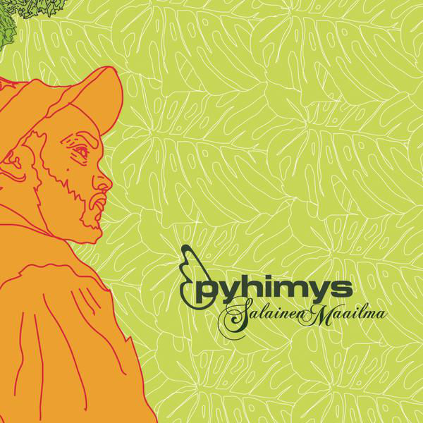
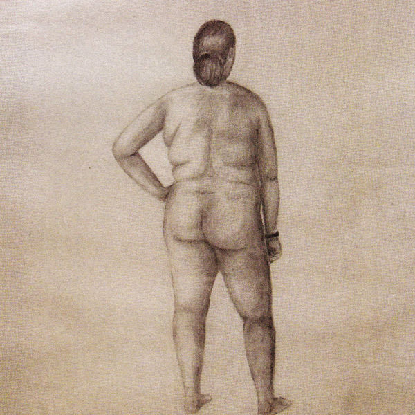
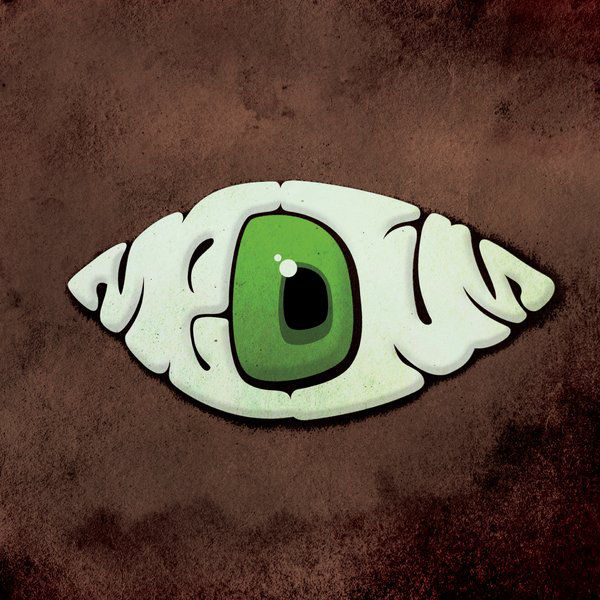
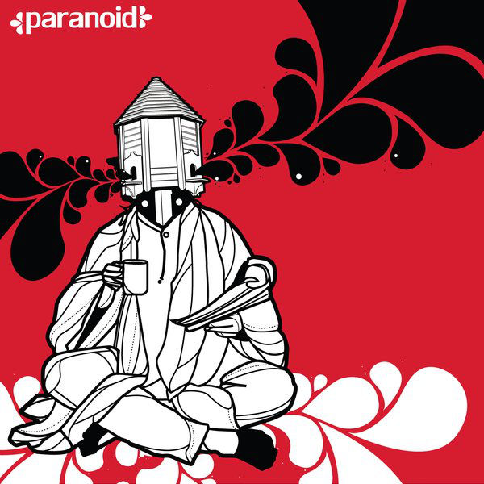
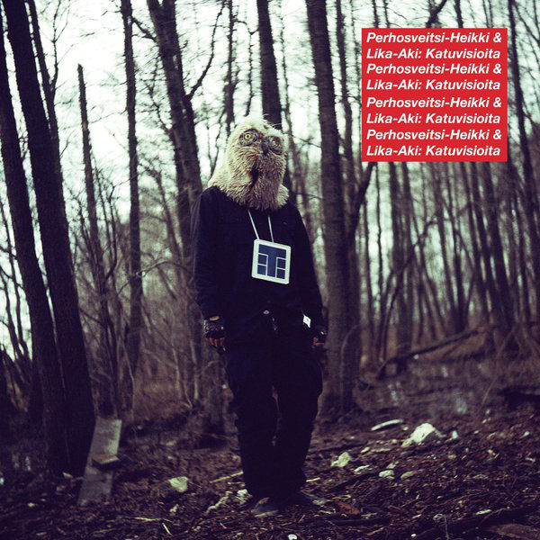
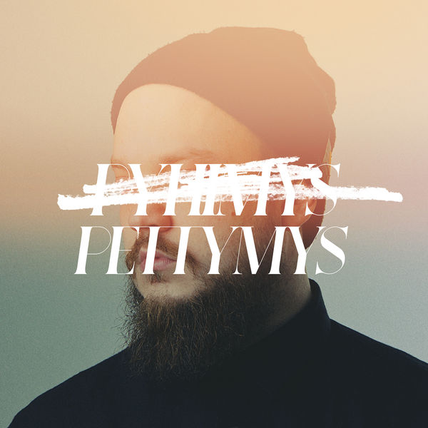
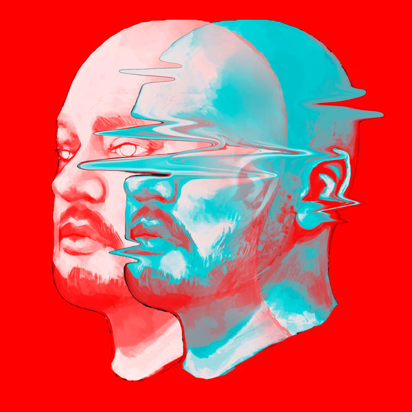
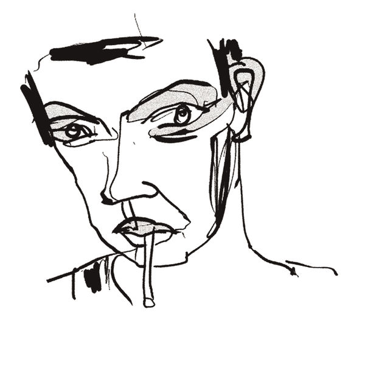

Mikko Heikki Matias Kuoppala
- Artistinimeltään Pyhimys
- Syntynyt 1981
- Koulutukselta filosofian ja matematiikan opettaja
- Ensimmäiset kappaleet 2004
- Kasvanut Malminkartanossa
Diskografia
- Ensimmäinen kappale vuonna 2004
- 7 omaa albumia
- Toimi JVG:n managerina vuonna 2011
- Kuuluu/kuulunut myös yhtyeisiin:
- Teflon Brothers
- Ruger Hauer
- Medium
- Steve iVander

- Salainen Maailma julkaistiin 2007
- Arvostelumenestys
- Monsp Recordsin julkaisema
- Julkaistiin myös vinyylinä CD-levyjen lisäksi.

- Arvoitus koko ihminen julkaistu 2008
- Yhteisalbumi Timo Pieni Huijauksen kanssa
- Nousi 16. sijalle suomen virallisella albumilistalla

- Kauan odotettu Medium -albumi julkaistaan 2011
- Saa hyvät arvostelut
- Albumia valmistettu vuodesta 2006 saakka
- Tehty yhdessä kahdeksanhenkisen yhtyeen kanssa

- Paranoid julkaistaan Mediumin jälkeen 2011
- Kaikki kappaleet ovat nimeä Paranoid
- Sanoitukset pyörivät harhojen ja ahdistuneisuuden sekä henkisen ja fyysisen väkivallan ympärillä

- Katuvisioita -albumi julkaistaan vuonna 2012
- Yhteisalbumi Heikki Kuulan kanssa
- Artistit käyttävät albumilla nimiä Perhosveitsi-Heikki ja Lika-Aki

- Pettymys julkaistaan 2015, 4 vuotta viimeisen sooloalbumin jälkeen
- Nousi ensimmäiseksi Suomen virallisella albumilistalla
- Vierailevat artistit ovat Pyhimyksen henkilökohtaisia suosikkeja

- Uusin albumi, Tapa Poika, juuri julkaistu 2018
- Esitettiin ennakkoon Valkoisessa salissa marraskuussa 2017
- Nousi 16. sijalle suomen virallisella albumilistalla
Teflon Brothers
- Rap-trio, perustettu 2006
- Jäseninä ovat Pyhimys, Heikki Kuula ja Voli
- Yli 88 miljoonaa toistoa pelkästään striimauspalveluissa
- 5 albumia julkaistu:
- T (2009)
- © (2010)
- Valkoisten Dyynien Ratsastajat (2013)
- Isänpäivä (2014)
- Circus (2017)
- Yhä aktiivinen!
Muutama kappale:
- Pämppää
- Tukholman Syndrooma
- Maradona (kesä ´86)
Ruger Hauer
- Jäseninä Tommisock, Pyhimys ja Paperi-T
- Toimi 2008-2016

- Esikoisalbumi
- Kritiikeiltä hyvät arvostelut